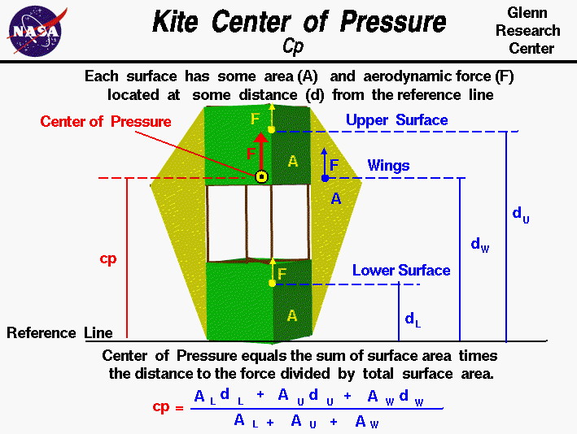

|

The flight characteristics of a
kite
depend on the relative size of the
forces
which act on the kite and
where
those forces act on the kite.
The forces include the aerodynamic
lift, and
drag
which act through the
center of pressure,
the tension in the
control line
which acts through the
bridle point,
and the
weight
which acts through the
center of gravity.
We can predict the performance of a kite design if we can calculate all
of these forces and locations.
The
center of pressure
is the average location of the aerodynamic forces
acting on any object.
To determine the
stability
and
trim
of the kite we need to be concerned with
the magnitude of the aerodynamic forces and the
location of the center of pressure.
How would you determine the location of the
center of pressure during design?
Calculating cp
You can calculate the center of pressure, but, in general, this is a
complicated procedure requiring the use of calculus. This figure
shows a simplified version of the center of pressure calculation.
Because we are concerned with aerodynamic forces, we can neglect
the effects of the frame of the kite, and concern ourselves only with the
surfaces.
Each surface has an area associated with it
which you can calculate.
Since each of the surfaces of a kite behaves like a thin, flat plate
at low speed, we can determine the center of pressure of
each surface as described below.
Knowing the center of pressure of each surface we can compute the
center of pressure for the kite as the area-weighted average
of all the surfaces. For the winged box kite shown on the figure,
we know the location, d, of the center of pressure and
the area, A, of the wings, W, and
the upper U and lower L surfaces. We choose as a reference line
the bottom of the kite, so that the location of the kite center of pressure
has the same reference as the center of gravity. (Note that normally
the aerodynamic center is measured from the leading edge of a lifting airfoil;
we are designating the aerodynamic center relative to the trailing edge).
A * cp = (A * d)U + (A * d)L + (A * d)W
A = (A)U + (A)L + (A)W
Component Cp Location
To simplify our analysis, we are going to assume that the aerodynamics of
all of the surfaces of the kite behave like flat plates.
We can then use techniques developed for
airplane aerodynamics
to determine our
kite aerodynamics.
In particular, for thin airfoils, it has been found that
the aerodynamic force acts through a location called the
aerodynamic center
where the aerodynamic
moment
remains a constant with angle of attack.
For a symmetric airfoil, like a flat plat, the magnitude of the aerodynamic
moment is zero and the location of the aerodynamic center is 1/4 of the
chord length back from the leading edge.
In computing the center of pressure for the entire kite, we will assume that
the aerodynamic force of each component acts through the mean aerodynamic
center of each surface.
You can use the
KiteModeler
computer program to calculate values for the center of pressure of your design.
Select "Design" mode and change the geometry of your kite using input sliders.
The program calculates the center of pressure using the equation listed above
and displays the output results.
Activities:
Guided Tours
Navigation ..


- Beginner's Guide Home Page
|